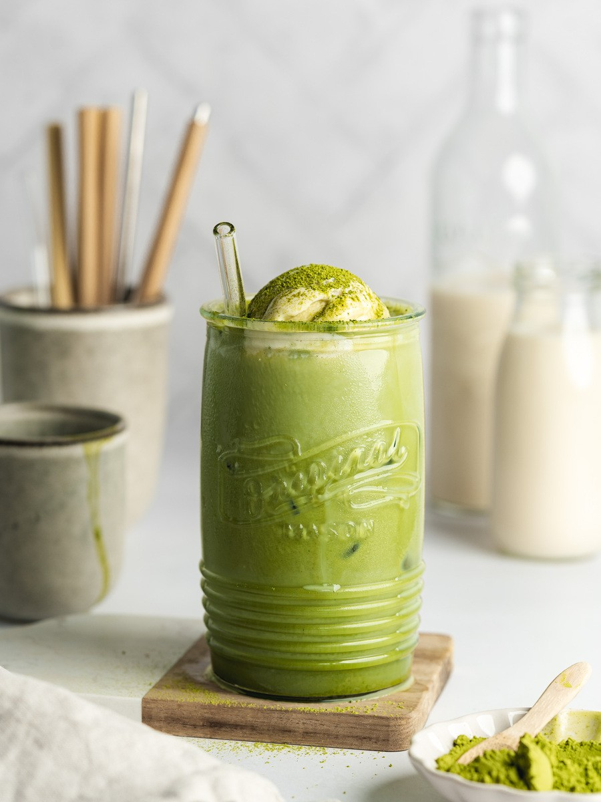

MATCHA
Flavour Updated
O matcha é um tipo de chá verde em pó originário do Japão, conhecido por sua cor vibrante e sabor único. O "hype" em torno do matcha se deve aos seus potenciais benefícios para a saúde, como o alto teor de antioxidantes e a combinação de cafeína e L-teanina, que proporcionam energia e foco sem a agitação do café. Benefícios do Matcha: Rico em antioxidantes: O matcha é uma excelente fonte de catequinas, especialmente o EGCG, um composto com propriedades antioxidantes e potencialmente anticancerígenas. Melhora o humor e a concentração: A L-teanina presente no matcha pode promover relaxamento, reduzir o estresse e melhorar o foco mental. Fornece energia e foco: A combinação de cafeína e L-teanina no matcha pode proporcionar energia duradoura e melhorar a concentração sem os efeitos colaterais do café. Pode ajudar na perda de peso: Alguns estudos sugerem que o matcha pode auxiliar na perda de peso devido às suas propriedades termogênicas, que aceleram o metabolismo e a queima de gordura. Potencial proteção contra doenças: Estudos indicam que o matcha pode ajudar a reduzir o risco de doenças cardíacas, problemas hepáticos e envelhecimento precoce. Outros benefícios: O matcha também pode auxiliar na redução da pressão arterial, melhorar a saúde do coração e proteger contra alguns tipos de câncer. Por que o Hype? Versatilidade: O matcha pode ser consumido de diversas formas, como chá, em bebidas (latte, smoothies), em receitas (bolos, sorvetes) e até em suplementos. Popularidade: A disseminação de receitas e produtos com matcha em redes sociais e na mídia contribuiu para sua popularidade. Estilo de vida: O matcha se tornou um símbolo de um estilo de vida mais saudável e equilibrado, atraindo pessoas interessadas em seus potenciais benefícios. Aparência: A cor verde vibrante e o sabor característico do matcha também contribuem para sua popularidade e apelo visual.

Matcha Tea
Matcha Latte